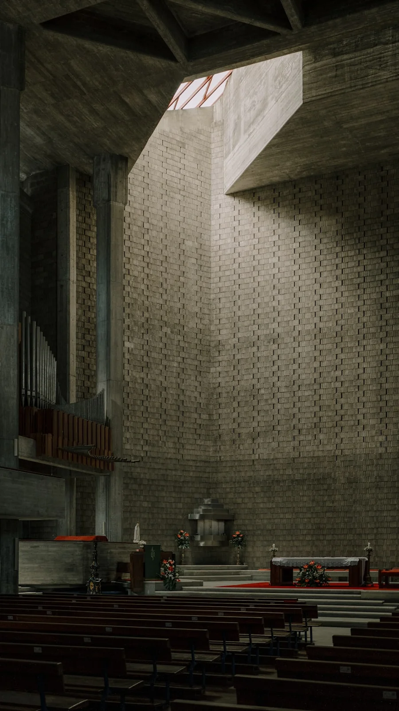
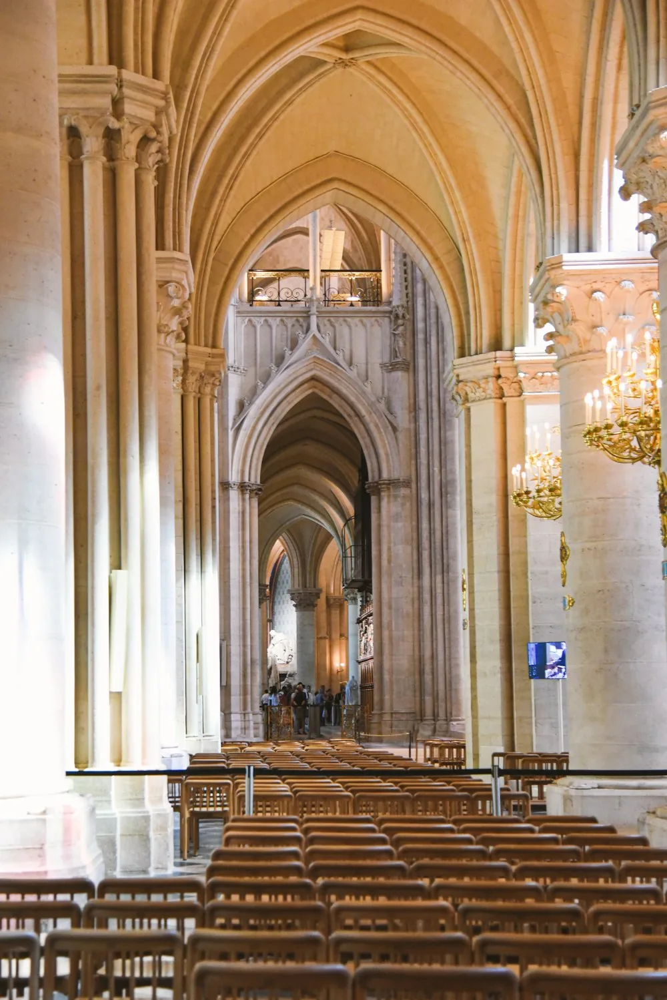
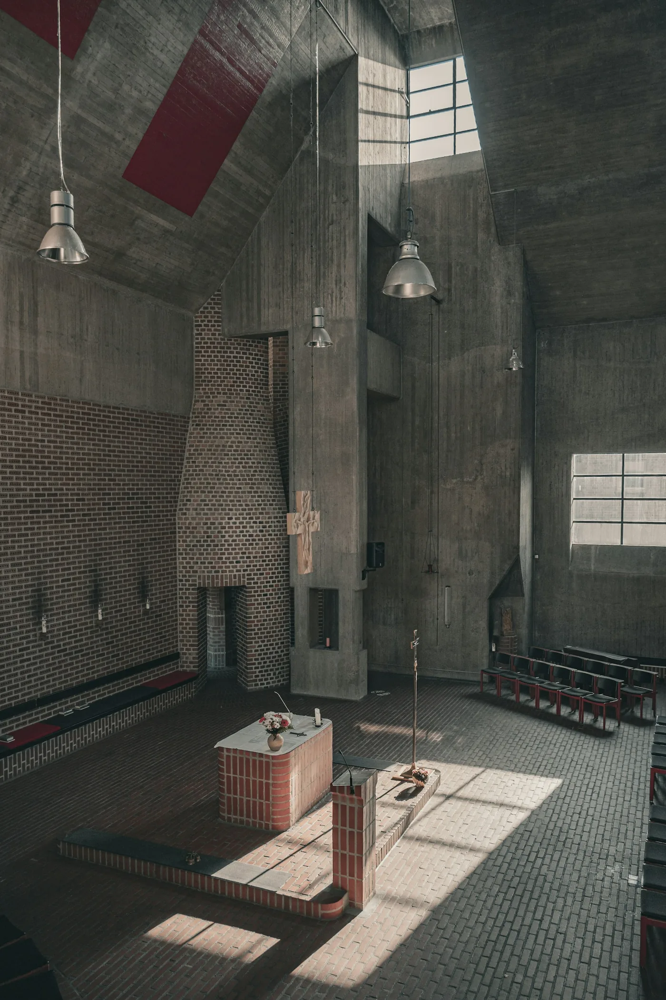
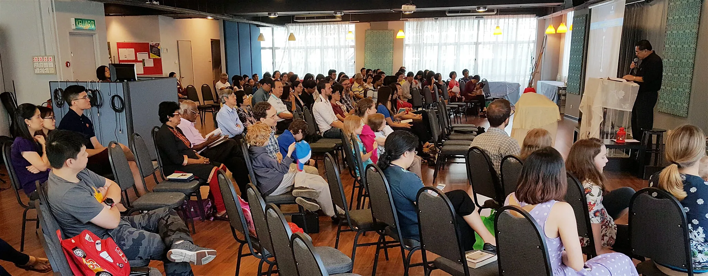
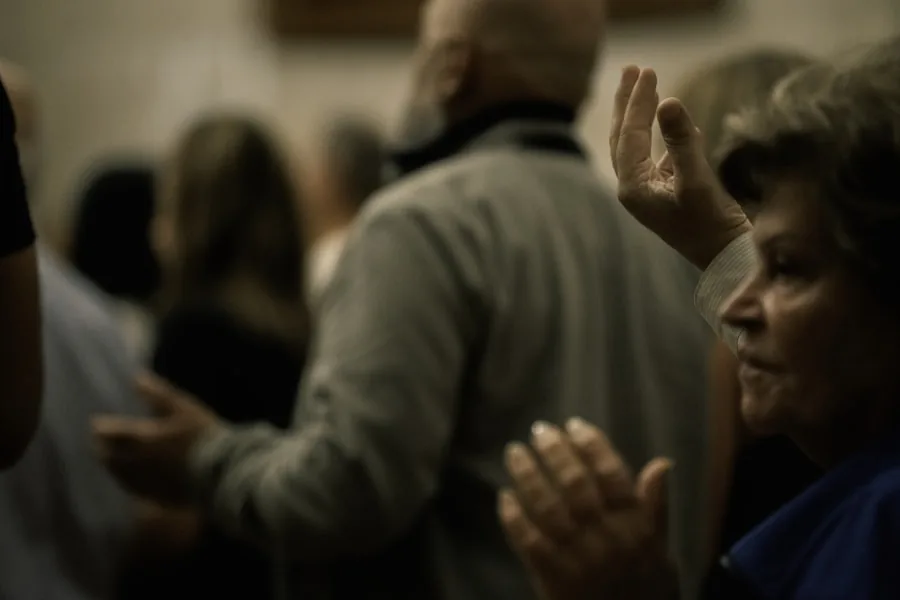
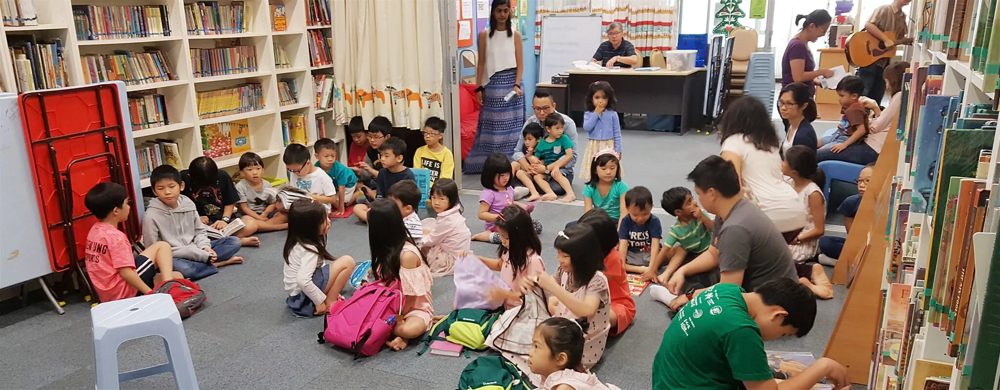

Centred on Christ
We proclaim that Jesus Christ is the King of the universe and the Saviour of humankind.
City Discipleship Presbyterian Church
Puchong · Selangor
A church for the weary, the seeking and the found. A family of grace, rooted in the Word, here in the heart of Puchong.

You are welcome here
Our story
CDPC Puchong is a church made up of diverse followers of Jesus who gather together for Christ-centred worship, Scripture-based expository preaching and grace-enabled spirituality.
We are a daughter church of City Discipleship Presbyterian Church and a member of Gereja Presbyterian Malaysia. With Christian communities worldwide, we pray that our lives will be caught up in God’s redemptive story — in Puchong and beyond.
Read more about us
Our foundation
For no one can lay a foundation other than that which is laid, which is Jesus Christ.
1 Corinthians 3:11
City Discipleship Presbyterian Church
Gereja Presbyterian Malaysia
Our DNA
Three currents run through everything we do.
We proclaim that Jesus Christ is the King of the universe and the Saviour of humankind.
The way to eternal life does not depend on human effort, but on the generous grace of God.
God speaks to us through the Bible and, by His Spirit, transforms our lives.
The light of the world
“The light shines in the darkness, and the darkness has not overcome it.”
Worship service
We gather to worship God through songs and prayer, to listen to words of hope from His Word, and to belong to one another. Come as you are. There is a place for you here.
9:00AM
Next gathering · Sunday, 25 October
Stay for fellowship, meet a new face, and share a meal. Our life together is intergenerational — and there is always plenty of makan.
WhatsApp usListen for the living Word
We seek to centre ourselves on Jesus Christ, the gospel of grace and the Living Word. Every week, Scripture is opened for the life of the church.

Latest “Your word is a lamp to my feet and a light to my path.”Psalm 119:105Latest sermon · 11 October 2026
Where do you turn when the storm will not quiet? A word of hope for the middle of the night.
Listen on SpotifySermons are recorded weekly. Listen wherever you are.
Browse every sermonOur confession
We believe the Bible tells one true story — from creation to new creation — and that we are invited into it.
Our beliefs are determined by the Bible and summarised in the Apostles’ Creed, the Nicene Creed and the Westminster Standards.
Read our full beliefsIn the beginning, God made the universe and all its living creatures. He created humankind in His own likeness as the crowning jewel of creation — to represent Him on earth, and to worship and enjoy Him forever.
“I believe in God the Father Almighty, Maker of heaven and earth.”
Read the creed in fullWorship · Learn · Heal
An international mix of cultures, generations and mother tongues. We seek to celebrate our diversity while finding our common ground in Christ.


Our life is shaped by the gospel story and our shared life in Jesus Christ. We sing, pray and listen as one body.
An intergenerational mix of teaching, small-group discussion, fellowship, and plenty of makan fills our life together.
We are broken people who have found hope in Jesus. We remind one another of God’s grace for every season of life.

Children’s LibraryFor toddlers to adults
Welcome to a community library with more than 4,000 carefully chosen English books, many of them award-winning. Come read, play, and grow to love God and people.
Josh Ng
Lee Han Meng
Victor Selvarajah
Rodney Toh
Joseph Tan
Andrew Goh, Lee Yew Kong,
Lee Chun Chung, Hon Sir Neng,
Ivan Se Hoo, Enoch Chew,
Isaac Khoo, Cassandra Chung